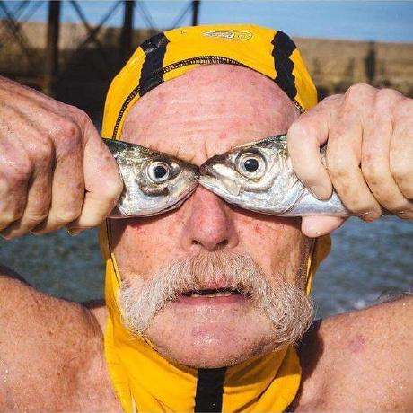
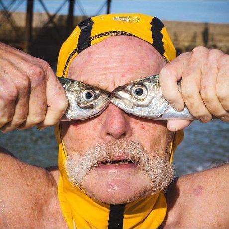

File System application/OOP/Group Prject
In-Memory Virtual File System
About
The goal of this project is to develop an in-memory Virtual File System (VFS), named the Comp VFS (CVFS), in Java. A VFS is usually built on top of a host file system to enable uniform access to files located in different host file systems, while the CVFS simulates a file system in memory.
Timeline
September 2020 − November 2020
Note
In-Memory Virtual File System
The CVFS provides a command line interface (CLI) tool to facilitate the use of virtual disks, and some of the requirements for the CLI tool are as the following. Here we use symbol ‘$’ to denote the working directory and symbol ‘:’ to separate the file names in a path. For example, path “$:xyz” refers to a file named “xyz” inside the working directory. Depending on whether the file actually exists in the working directory or not, the path may be valid or invalid.
The system operates on one virtual disk at a time; Each virtual disk has a maximum size and may contain as many files, i.e., documents and directories, as allowed by that size; For each document, the virtual disk maintains its name, type, and content, all of type String; For each directory, the virtual disk maintains its name of type String and the list of files directly contained in it; Only digits and English letters are allowed in file names, and each file name may have at most 10 characters; Only documents of types txt, java, html, and css are allowed in the system; The size of a document is calculated as 40+content.length()*2, and the size of a directory is calculated as 40 plus the total size of its contained files.
All the commands for the file system are as follows:
- Command: newDisk diskSize
- Command: newDoc docName docType docContent
- Command: newDir dirName
- Command: delete fileName
- Command: rename oldFileName newFileName
- Command: changeDir dirName
- Command: list
- Command: rList
- Command: newSimpleCri criName attrName op val
- Criterion name: IsDocument
- Command: newNegation criName1 criName2
- Command: newBinaryCri criName1 criName3 logicOp criName4
- Command: printAllCriteria
- Command: search criName
- Command: rSearch criName
The tool should support the creation of a new disk with a specified maximum size.
Effect: Creates a new virtual disk with the specified maximum size. The previous working disk, if any, is closed; The newly created disk is set to be the working disk of the system, and the working directory is set to be the root directory of the disk.
The tool should support the creation of a new document in the working directory.
Effect: Creates a new document in the working directory with the specified name, type, and content.
The tool should support the creation of a new directory in the working directory.
Effect: Creates a new directory in the working directory with the specified name.
The tool should support the deletion of an existing file in the working directory.
Effect: Delete an existing file with the specified name from the working directory.
The tool should support the rename of an existing file in the working directory.
Effect: Rename an existing file in the working directory from oldFileName to newFileName.
The tool should support the change of working directory.
Effect: If there is a directory with the specified name in the working directory, use that directory as the new working directory; If dirName is “..”, i.e., two dots, and the working directory is not the root directory of the working disk, use the parent directory of the working directory as the new working directory.
The tool should support listing all files direclty contained in the working directory.
Effect: List all the files directly contained in the working directory. For each document, list the name, type, and size; For each directory, list the name and size. Report the total number and size of files listed.
The tool should support recursively listing all files in the working directory.
Effect: List all the files contained in the working directory. For each document, list the name, type, and size; For each directory, list the name and size. Use indentation to indicate the level of each file. Report the total number and size of files listed.
The tool should support the construction of simple criteria.
Effect: Construct a simple criterion that can be referenced by criName. A criName contains exactly two English letters, and attrName is either name, type, or size. If attrName is name, op must be contains and val must be a string in double quote; If attrName is type, op must be equals and val must be a string in double quote; If attrName is size, op can be >, <, >=, <=, ==, or !=, and val must be an integer.
The tool should support a simple criterion to check whether a file is a document.
Effect: Evaluates to true if and only if on a document.
The tool should support the construction of composite criteria.
Effect: Construct a composite criterion that can be referenced by criName1. The new criterion constructed using command newNegation is the negation of an ex- isting criterion named criName2; The new criterion constructed using command newBinaryCri is criName3 op criName4, where criName3 and criName4 are two existing criteria, while logicOp is either && or ||.
The tool should support the printing of all defined criteria.
Effect: Print out all the criteria defined. All criteria should be resolved to the form containing only attrName, op, val, logicOp, or IsDocument.
The tool should support searching for files in the working directory based on an existing criterion.
Effect: List all the files directly contained in the working directory that satisfy criterion criName. Report the total number and size of files listed.
The tool should support recursively searching for files in the working directory based on an existing criterion.
Effect: List all the files contained in the working directory that satisfy criterion criName. Report the total number and size of files listed.
System Architecture
The UI class is responsible for user interactivity with the program. It displays output to the console in a human readable format and accepts input from the user. The output includes file listing, command results, error messages and more. The input is mostly commands such as those for creating a file, a criterion or listing files in the current working directory.
The UI class sends user commands to the CommandController class. The CommandController interprets commands and decides which operation to carry out based on the type of command. The CommandController class delegates command execution to the CVFS class.
The CVFS class contains all the business logic for the application. The class exposes methods to create files, documents and criteria. Other functions include listing and searching files in the working directory or recursively.
The CVFS class however delegates some of the tasks to other the VirtualDisk class. The VirtualDisk class represents a virtual disk. There can only be one virtual disk at a time from the CVFS perspective. The virtual disk handles some disk related tasks such as getting the current working directory path and switching directories.
The VirtualDisk class maintains a hierarchy of File class objects. The File class is an abstract class that represents both documents and directories. A document is represented by the Document class. The Document class defines the type of document, content and knows how to compute the size of the document based on the content. The Directory class models a directory. It defines the set of File objects it contains and knows how to compute its size based on its contents.
Additionally, the VirtualDisk class defines the set of criteria that can be used to search for files in it. The abstract class FileCriterion is the one any other file criterion must inherit from. It defines a common property such as a criterion name and the validation of the name upon initialization. The FileCriterion class also defines the abstract method used to check if files meet the criterion.
A SimpleCriterion class represents criteria that are built from scratch (they are not built by using other criteria). Concrete classes that inherit from the SimpleCriterion class are the FileTypeCriterion (validates documents based on their type), FileNameCriterion (validates files based on their names), FileSizeCriterion (validates files based on their size) and the IsDocumentCriterion class which checks whether a file is a document or not.
There are composite criteria that are built from existing FileCriterion objects. These are the BinaryCompositeCriterion and the NegationCompositeCriterion.
The BinaryCompositeCriterion is built from two FileCriterion objects and a logical operator. The NegativeCompositeCriterion is built from the negation of an existing FileCriterion.
The Action class is used by the CVFS to encapsulate tasks that can be undone or redone. The CVFS maintains a stack of Action objects and unwinds them during an “undo” or “redo” operation. For example, when an action is done, it is pushed onto the stack. An “undo” operation pops the action from the stack and executes it.
The Bucket class is an inner class of the CVFS class. When doing a recursive retrieval of files starting from the working directory, the Bucket class is used to group the files according to the level the search was made. The deeper the files were found, the higher the “level” in the Bucket class.
Finally, the Application class is used to launch the application. It instantiates the CVFS, UI and CommandController classes and then asks the UI to display the starter user interface, so that the user can proceed from there.
Snipped Source Code
Update: 1 MAR, 2022
package hk.edu.polyu.comp.comp2021.cvfs.controller;
import hk.edu.polyu.comp.comp2021.cvfs.model.CVFS;
import hk.edu.polyu.comp.comp2021.cvfs.model.File;
import hk.edu.polyu.comp.comp2021.cvfs.model.criteria.FileCriterion;
import hk.edu.polyu.comp.comp2021.cvfs.view.UI;
import java.util.List;
/**
* The command controller interpets each
* command and invokes the appropriate
* service from the CVFS.
*/
public class CommandController {
private final CVFS cvfs;
/**
* Constructor.
*
* @param cvfs The CVFS instance on which to forward command requests.
*/
public CommandController(CVFS cvfs) {
this.cvfs = cvfs;
}
/**
* @return Return the path of the current working directory.
*/
public String getCurrentPath() {
return cvfs.getWorkingDirPath();
}
private Long parseLongOrNull(String longStr) {
try {
return Long.parseLong(longStr);
} catch (Exception e) {
return null;
}
}
/**
* @param command The command to be executed.
*/
public void executeCommand(String command) {
String[] commandSplit = command.split(" ");
switch (commandSplit[0]) {
case "newDisk":
// check the parts of the 'newDisk' command.
if (commandSplit.length != 2) {
UI.printError("Could not create disk due " +
"to bad command format. Try again with:" +
" newDisk where '' is the size of the disk");
return;
}
// check the value for the disksize.
Long diskSize = parseLongOrNull(commandSplit[1]);
if (diskSize == null) {
UI.printError("Bad value for the the disksize: " + commandSplit[1]);
return;
}
// now execute the command.
cvfs.newDisk(diskSize);
UI.printSuccess("Created new disk successfully!");
break;
case "newDoc":
// check if the parts of the 'newDoc' command
if (commandSplit.length < 4) {
System.out.println("\nCould not create new document due to a bad command format. Try again" +
" with: newDoc docName docType docContent\n");
return;
}
// group the values from the third index all the way the last array index
StringBuilder builder = new StringBuilder();
for(int i = 3; i < commandSplit.length; i++){
builder.append(commandSplit[i]);
}
// execute the command
try {
cvfs.newDocument(commandSplit[1], commandSplit[2], builder.toString());
UI.printSuccess("The document was created successfully!");
} catch (Exception e){
UI.printError(e.getMessage());
}
break;
case "newDir":
// check if the parts of the 'newDir' are okay
if (commandSplit.length != 2) {
UI.printError("Could not create directory due to a bad command format. " +
"Try again with: " + "newDir dirName");
return;
}
// execute the command
try {
cvfs.newDirectory(commandSplit[1]);
UI.printSuccess("Created directory successfully!");
} catch (Exception e){
UI.printError(e.getMessage());
}
break;
case "delete":
// check if the parts of the 'delete' are okay
if (commandSplit.length != 2) {
UI.printError("Could not delete file due a bad command format. " +
"Try again with: delete fileName");
return;
}
try {
// execute the command
cvfs.deleteFile(commandSplit[1]);
UI.printSuccess("Deleted file successfully!");
} catch (Exception e){
UI.printError(e.getMessage());
}
break;
case "rename":
// check if the parts of the 'rename' command are okay.
if (commandSplit.length != 3) {
UI.printError("Bad command format. Try again with: rename oldName newName");
return;
}
try {
// execute the rename command
cvfs.renameFile(commandSplit[1], commandSplit[2]);
UI.printSuccess("Renamed file successfully");
} catch (Exception e){
UI.printError(e.getMessage());
}
break;
case "changeDir":
// check command format
if (commandSplit.length != 2) {
UI.printError("Bad comand format. Try again with: changeDir dirName");
return;
}
try {
// execute command
cvfs.changeDir(commandSplit[1]);
UI.printSuccess("Changed to new directory");
} catch (Exception e){
UI.printError(e.getMessage());
}
break;
case "list":
// execute the list command
List fileList = cvfs.list();
UI.printFileList(fileList);
break;
case "rList":
// execute the rList command
List fileBuckets = cvfs.rList();
UI.printFilesRecursively(fileBuckets);
break;
case "newSimpleCri":
// check the command format
if (commandSplit.length != 5) {
UI.printError("Bad command format. " +
"Try again with: newSimpleCri criName attrName op val");
return;
}
try {
cvfs.createSimpleCriterion(commandSplit[1], commandSplit[2], commandSplit[3], commandSplit[4]);
UI.printSuccess("Created criterion: " + commandSplit[1] + " successfully!");
} catch (Exception e){
UI.printError(e.getMessage());
}
break;
case "newNegation":
if (commandSplit.length != 3) {
UI.printError("Bad command formt. Try again with: newNegation criName1 criName2");
return;
}
try {
cvfs.createNegationCriterion(commandSplit[1], commandSplit[2]);
UI.printSuccess("Created criterion: " + commandSplit[1] + " successfully!");
} catch (Exception e){
UI.printError(e.getMessage());
}
break;
case "newBinaryCri":
if (commandSplit.length != 5) {
UI.printError("Bad comand format. " +
"Try again with: newBinaryCri criName criName1 logicOp criName2");
return;
}
try {
cvfs.createBinaryCriterion(commandSplit[1], commandSplit[2], commandSplit[4], commandSplit[3]);
UI.printSuccess("Created criterion: " + commandSplit[1] + " successfully");
} catch (Exception e){
UI.printError(e.getMessage());
}
break;
case "printAllCriteria":
List criteria = cvfs.getAllCriteria();
UI.printAllCriteria(criteria);
break;
case "search":
if(commandSplit.length != 2){
UI.printError("Bad command format. Try again with: search criName");
return;
}
try {
List files = cvfs.searchByCriterion(commandSplit[1]);
UI.printFileList(files);
} catch (Exception e){
UI.printError(e.getMessage());
}
break;
case "rSearch":
if(commandSplit.length != 2){
UI.printError("Bad command format. Try again with: rSearch criName");
return;
}
try {
List files = cvfs.searchRecursivelyByCriterion(commandSplit[1]);
UI.printFilesRecursively(files);
} catch (Exception e){
UI.printError(e.getMessage());
}
break;
case "undo":
if(commandSplit.length != 1) {
UI.printError("Bad command format. Try again with: undo");
return;
}
try {
cvfs.undo();
} catch (Exception e){
UI.printError(e.getMessage());
}
break;
case "redo":
if(commandSplit.length != 1){
UI.printError("Bad command format. Try again with: redo");
return;
}
cvfs.redo();
break;
case "store":
if(commandSplit.length != 2){
UI.printError("Bad command format. Try again with: store fileName");
return;
}
try {
cvfs.store(commandSplit[1]);
} catch (Exception e) {
UI.printError(e.getMessage());
}
break;
case "load":
if(commandSplit.length != 2){
UI.printError("Bad command format. Try again with: load fileName");
return;
}
try {
cvfs.load(commandSplit[1]);
} catch (Exception e){
UI.printError(e.getMessage());
}
break;
default:
UI.printError("Bad command. Check and try again.");
}
}
}
Open Source Code
Development Team
 
